Langkah demi langkah: transaksi beli dan jual valas, stok valas, kepatuhan Bank Indonesia, laporan, dan keuangan.
PT. UNIVERSAL VALUTA PRIMA
Jl. Bypass Ngurah Rai No. 4X, Kuta, Bali +6285-122-777-970
PT. UNIVERSAL VALUTA PRIMA
Daftar isi
Daftar isi
Pengantar
Tentang panduan ini
Panduan ini menjelaskan cara memakai aplikasi POS Skyline Exchange di skylinemoneychanger.com/pos, dari pengaturan awal sampai laporan untuk Bank Indonesia.
Angka bulat oranye pada gambar sama dengan nomor langkah di bawahnya.
Nama tombol dan menu ditulis seperti di layar, misalnya Simpan.
Gambar diambil dari tampilan HP. Di komputer, susunannya lebih lebar tapi tombolnya sama.
Data customer pada gambar adalah data contoh.
Aplikasi bisa dibuka dari HP, tablet, atau komputer kasir dengan browser Chrome. Pastikan internet tersambung agar transaksi langsung tersimpan di server.
Bab 1
Masuk ke aplikasi
Setiap kasir punya akun sendiri. Nama kasir tercetak di struk dan tercatat di setiap transaksi.
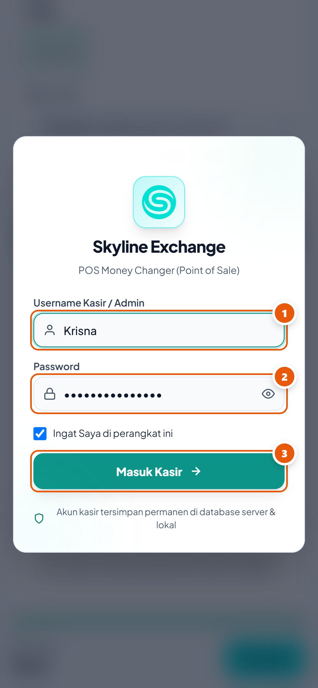
Gambar 1.1 Halaman masuk
Ketik username kasir atau admin.
Ketik password. Tekan ikon mata untuk melihat password yang diketik.
Tekan Masuk Kasir.
Centang Ingat Saya hanya di perangkat milik toko. Di perangkat umum, jangan dicentang.
Akun kasir dan password
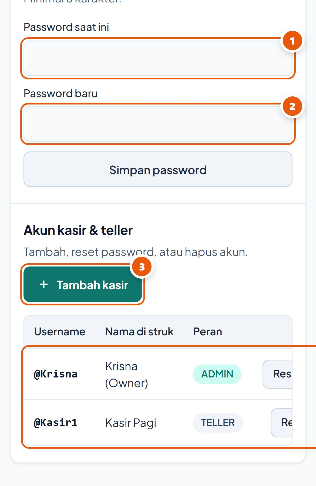
Gambar 1.2 Pengaturan → Akun Kasir
Untuk mengganti password sendiri, ketik password saat ini.
Ketik password baru (minimal 6 karakter), lalu Simpan password.
Admin: Tambah kasir untuk membuat akun kasir baru.
Daftar akun. Admin bisa Reset Sandi jika kasir lupa password, atau Hapus akun yang tidak dipakai.
Menu utama
Setelah masuk, aplikasi membuka halaman kasir. Menu ada di bagian atas. Di HP, geser baris menu ke kiri untuk melihat menu lainnya.
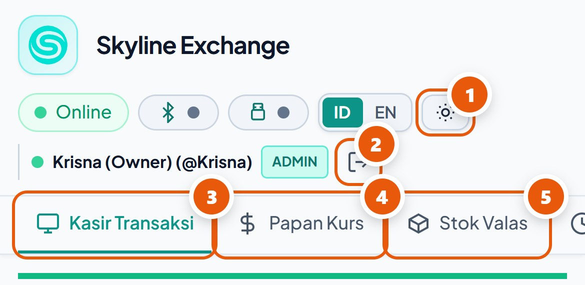
Gambar 1.3 Bagian atas aplikasi
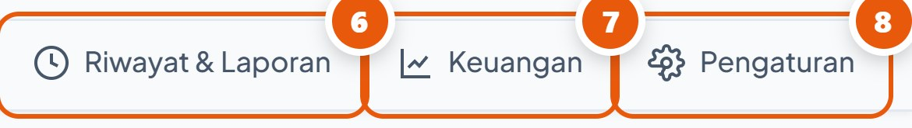
Gambar 1.4 Menu setelah digeser
Menu
Fungsi
1
Terang / Gelap
Mengganti tema tampilan.
2
Keluar
Keluar dari akun kasir. Lakukan setiap selesai shift.
3
Kasir Transaksi
Mencatat transaksi beli dan jual valas, lalu mencetak struk.
4
Papan Kurs
Kurs beli dan jual harian, dan tampilan kurs di TV toko.
5
Stok Valas
Posisi valas yang kita pegang saat ini.
6
Riwayat & Laporan
Daftar transaksi, cetak ulang struk, Laporan BI, Laporan Kepatuhan.
7
Keuangan
Catat biaya dan mutasi kas/bank, laporan keuangan.
Lakukan sekali saja saat pertama memakai aplikasi, dengan akun admin. Data ini muncul di struk dan di semua laporan.
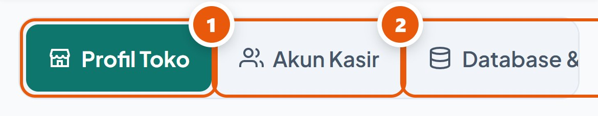
Gambar 2.1 Bagian di menu Pengaturan. Geser ke kiri untuk melihat semuanya.
1
Profil Toko
Data perusahaan dan printer struk.
2
Akun Kasir
Password dan akun kasir (Bab 1).
3
Database & Backup
Unduh cadangan data.
4
Kepatuhan BI
Batas threshold dan daftar DTTOT.
5
Stok Valas
Saldo awal valas dan kurs tengah BN.
6
Google Sheets
Salinan transaksi ke Google Sheets.
2.1Profil perusahaan
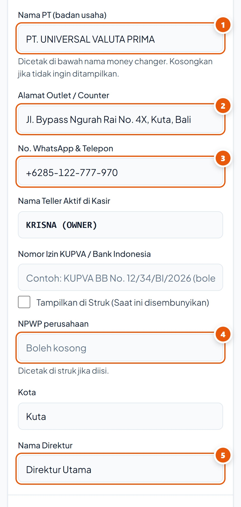
Gambar 2.2 Pengaturan → Profil Toko
Isi Nama PT sesuai akta perusahaan.
Isi alamat outlet.
Isi nomor WhatsApp / telepon.
Isi NPWP perusahaan dan kota. Kota dipakai di tanda tangan laporan.
Isi nama direktur untuk tanda tangan Laba/Rugi dan Neraca.
Gulir ke bawah, lalu tekan Simpan Pengaturan.
Nomor izin KUPVA BB dari Bank Indonesia bisa diisi juga. Centang Tampilkan di Struk bila ingin nomor izin tercetak.
2.2Printer struk 76 mm
Struk dicetak langsung ke printer kasir iWare DM-76H (atau printer ESC/POS lain) melalui program kecil Skyline Print Bridge di PC kasir.
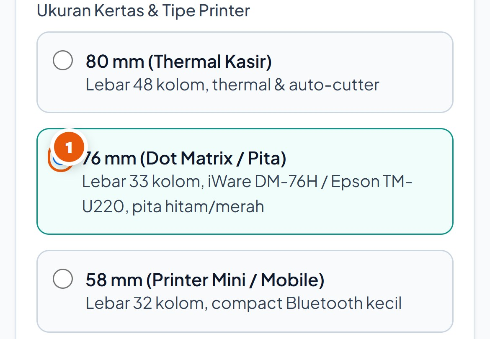
Gambar 2.3 Ukuran kertas
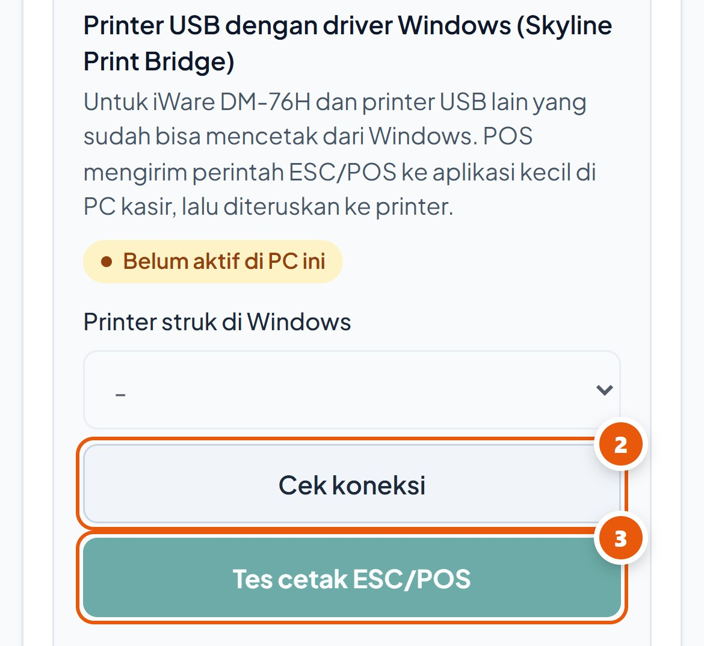
Gambar 2.4 Printer USB lewat Print Bridge
Di Profil Toko, pilih kertas 76 mm (Dot Matrix / Pita).
Unduh dan jalankan SkylinePrintBridge.cmd di PC kasir (sekali saja), lalu tekan Cek koneksi. Pilih printer kasir dari daftar.
Tekan Tes cetak ESC/POS. Printer mencetak struk percobaan.
Terakhir, tekan Simpan Pengaturan.
2.3Batas threshold
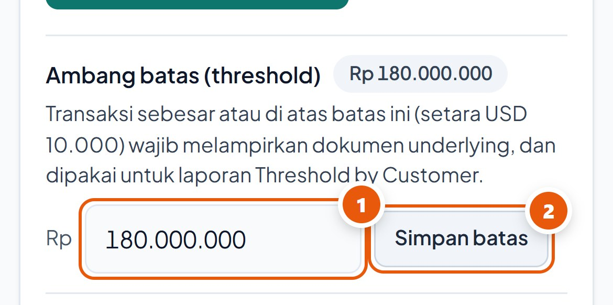
Gambar 2.5 Pengaturan → Kepatuhan BI
Isi batas threshold dalam Rupiah, setara USD 10.000 (contoh: Rp 180.000.000).
Tekan Simpan batas. Batas langsung berlaku untuk semua kasir.
2.4Papan kurs harian
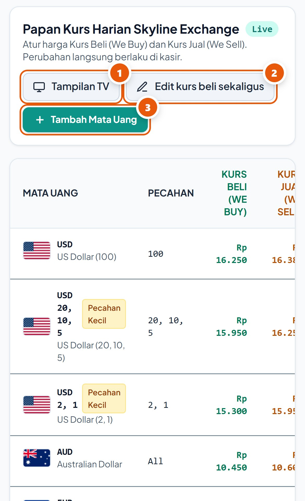
Gambar 2.6 Menu Papan Kurs
Tampilan TV membuka papan kurs untuk layar TV di toko.
Edit kurs beli sekaligus mengubah semua kurs beli dalam satu kali simpan.
Tambah Mata Uang untuk mata uang baru.
Untuk mengubah kurs satu mata uang, geser tabel ke kiri lalu tekan Edit Kurs di baris mata uang itu.
2.5Saldo awal valas
Buka Pengaturan → Stok Valas. Saldo awal adalah titik mulai menu Stok Valas, Laporan Summary Valas BI, dan laporan keuangan.
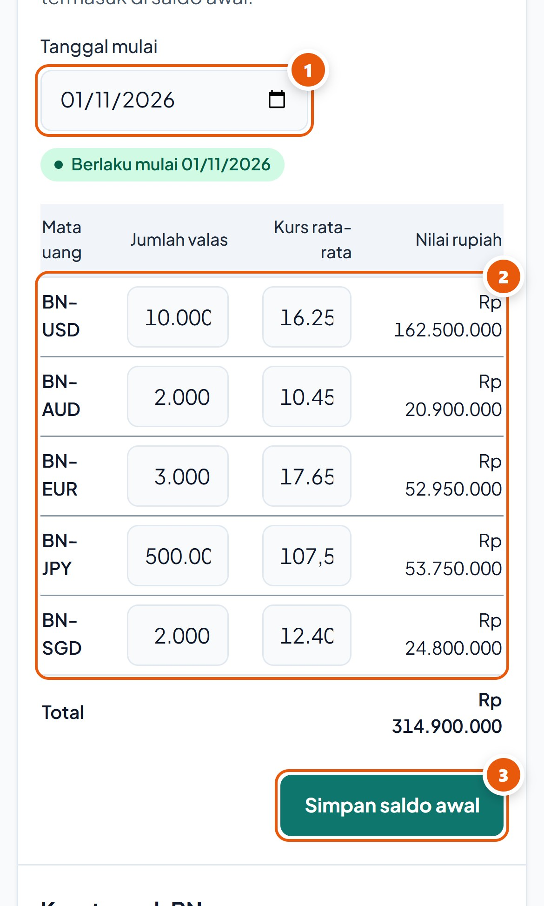
Gambar 2.7 Saldo awal valas
Pilih tanggal mulai pemakaian aplikasi.
Isi jumlah valas di brankas dan kurs rata-rata pembeliannya. Nilai Rupiah terhitung otomatis.
Tekan Simpan saldo awal.
2.6Kurs tengah BN
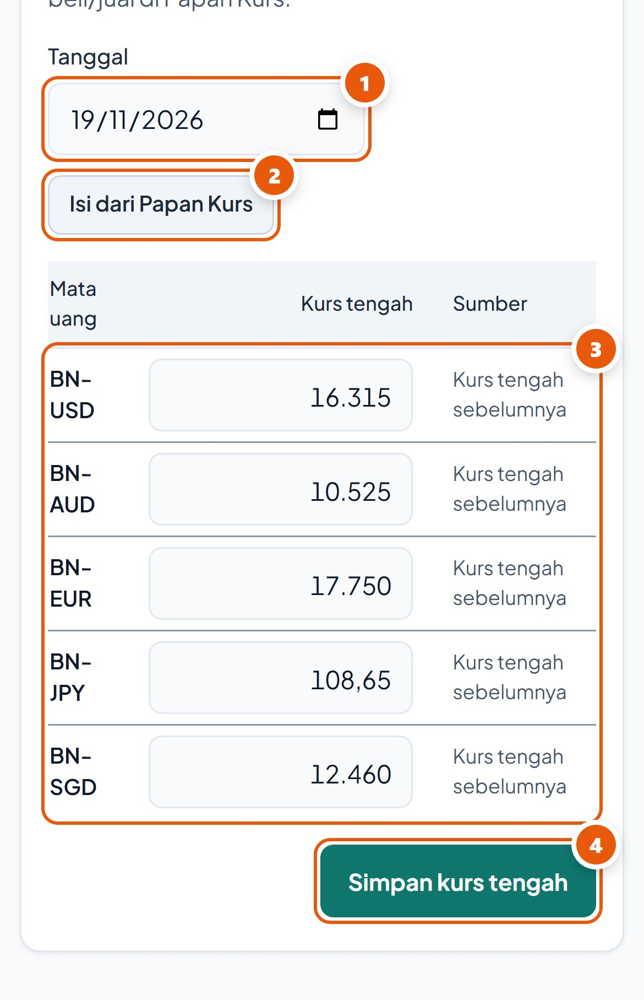
Gambar 2.8 Kurs tengah untuk menilai saldo akhir
Pilih tanggal, biasanya hari terakhir periode laporan.
Tekan Isi dari Papan Kurs untuk mengisi titik tengah kurs beli dan jual.
Ubah angka bila perlu.
Tekan Simpan kurs tengah.
2.7Saldo awal keuangan
Diisi sekali oleh admin di menu Keuangan, bagian paling bawah. Tanggalnya mengikuti tanggal saldo awal valas.
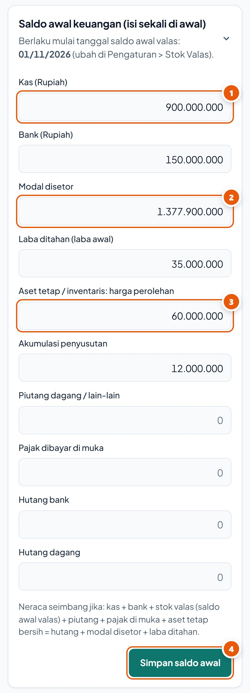
Gambar 2.9 Keuangan → Saldo awal keuangan
Isi saldo kas (Rupiah di laci dan brankas) dan saldo bank.
Isi modal disetor dan laba ditahan sampai tanggal mulai.
Isi aset tetap dan akumulasi penyusutannya, juga piutang dan hutang bila ada.
Tekan Simpan saldo awal.
Agar Neraca seimbang: kas + bank + stok valas + piutang + pajak dibayar di muka + aset tetap bersih harus sama dengan hutang + modal disetor + laba ditahan.
Bab 3
Transaksi pembelian valas
Customer menyerahkan valas, kasir membayar Rupiah. Mulai dari data customer, lalu valasnya.
Langkah 1Data customer
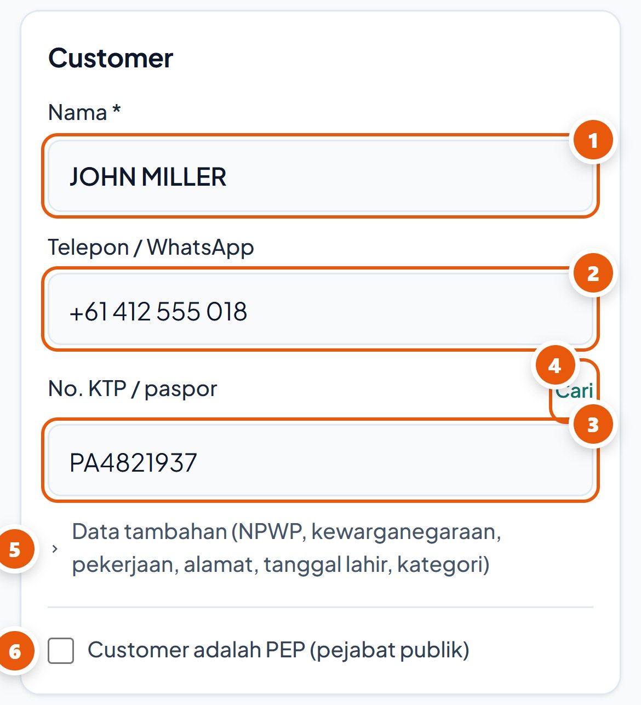
Gambar 3.1 Kartu Customer di Kasir Transaksi
Isi nama lengkap sesuai identitas.
Isi telepon / WhatsApp.
Isi No. KTP / paspor (wajib). Customer lama terisi otomatis.
Atau tekan Cari untuk mencari customer lama berdasarkan nama.
Buka Data tambahan: NPWP, kewarganegaraan, pekerjaan, jenis kelamin, alamat, tanggal dan tempat lahir, kategori.
Centang PEP hanya jika customer pejabat publik (Bab 6).
Langkah 2Pilih valas
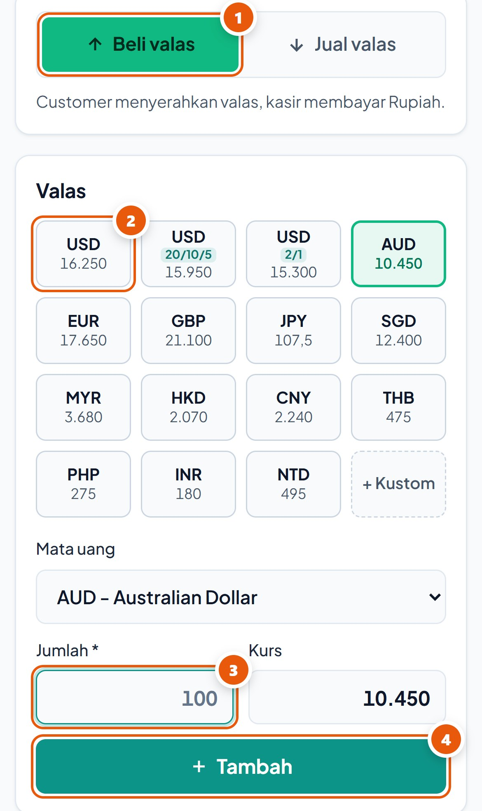
Gambar 3.2 Memilih valas dan jumlah
Pastikan Beli valas aktif (hijau).
Tekan kotak mata uang. Kurs beli hari ini terisi otomatis.
Ketik jumlah lembar valas.
Tekan Tambah. Ulangi untuk mata uang lain.
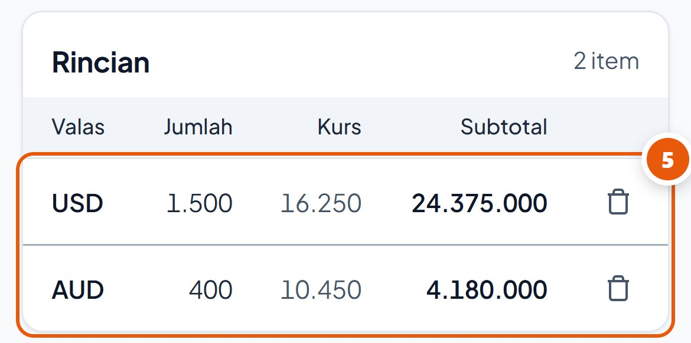
Gambar 3.3 Rincian transaksi
Periksa Rincian. Tekan ikon tempat sampah untuk menghapus baris yang salah.
Langkah 3Simpan dan cetak struk
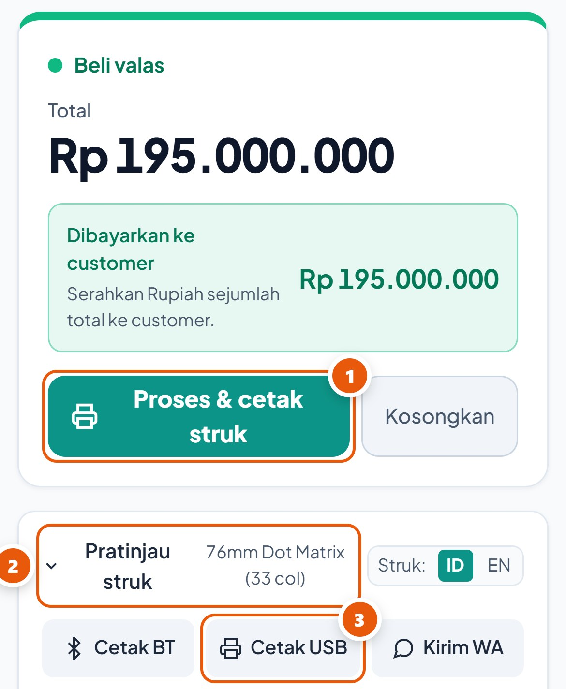
Gambar 3.4 Total dan tombol cetak
Cek total, lalu tekan Proses & cetak struk. Nomor struk dibuat otomatis dan struk langsung tercetak.
Pratinjau struk menampilkan struk sebelum dicetak.
Cetak USB mencetak ulang ke printer kasir. Ada juga Cetak BT (Bluetooth) dan Kirim WA.
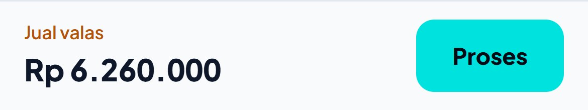
Gambar 3.5 Di HP, total dan tombol Proses selalu ada di bawah layar
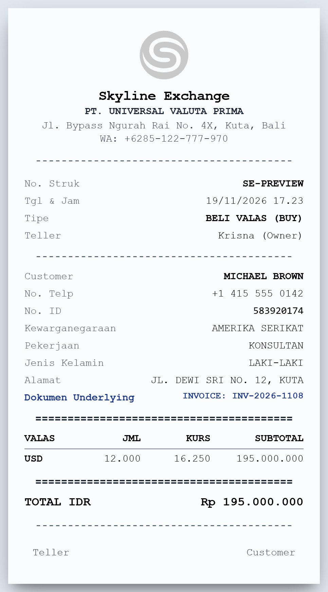
Gambar 3.6 Contoh struk 76 mmBab 4
Notifikasi threshold
Jika total transaksi mencapai batas threshold, kartu peringatan muncul di bagian atas halaman kasir. Tulisan Jumlah Transaksi Melebihi Threshold berkedip merah-putih.
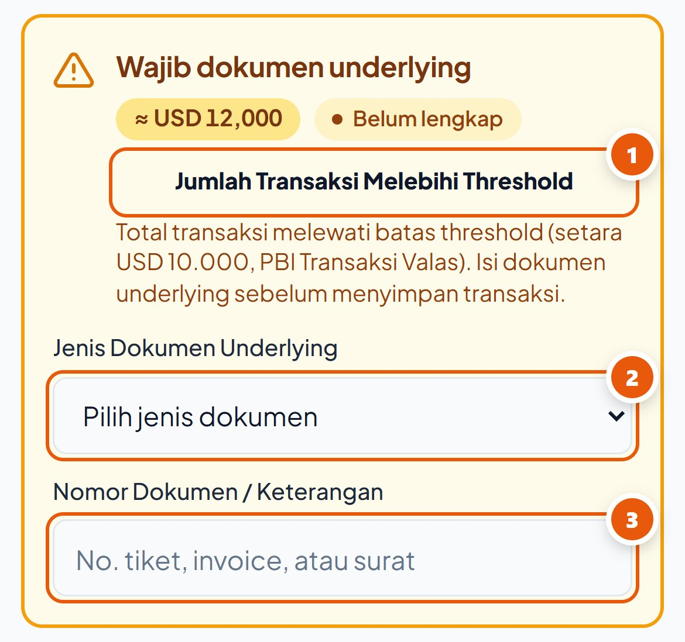
Gambar 4.1 Peringatan threshold dan dokumen underlying
Notifikasi berkedip sampai dokumen underlying dilengkapi.
Pilih jenis dokumen underlying: tiket, invoice, biaya pendidikan, pengobatan, kontrak, atau lainnya.
Isi nomor dokumen, lalu lanjutkan transaksi seperti biasa.
Transaksi di atas threshold tidak bisa disimpan sebelum dokumen underlying diisi. Simpan salinan dokumennya bersama arsip struk.
Threshold per customer
Beberapa transaksi kecil dari customer yang sama juga bisa melewati batas jika dijumlahkan. Cek dengan laporan Threshold by Customer (Bab 10).
Bab 5
Transaksi penjualan valas
Customer membayar Rupiah, kasir menyerahkan valas. Data customer diisi sama seperti pembelian (Bab 3, Langkah 1).
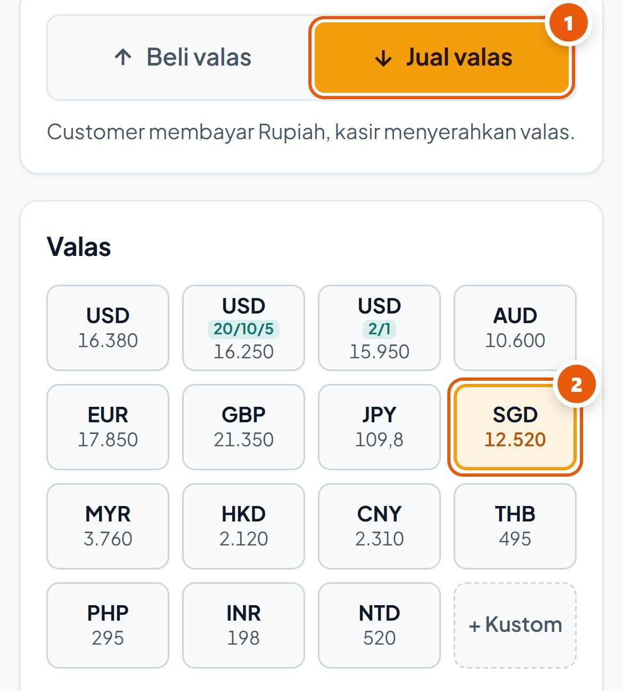
Gambar 5.1 Mode Jual valas
Tekan Jual valas (oranye).
Tekan mata uang, ketik jumlah, lalu Tambah. Kurs jual terisi otomatis.
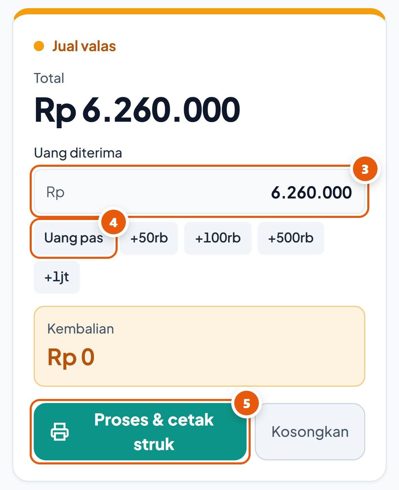
Gambar 5.2 Pembayaran dan kembalian
Ketik uang diterima dari customer. Kembalian dihitung otomatis.
Atau tekan tombol cepat: Uang pas, +50rb, +100rb, dan seterusnya.
Tekan Proses & cetak struk.
Stok valas berkurang otomatis setiap penjualan. Sisa stok terlihat di menu Stok Valas (Bab 8).
Bab 6
Customer PEP (pejabat publik)
PEP (Politically Exposed Person) wajib menjalani uji tuntas lanjut (EDD) dan mendapat persetujuan direksi sebelum transaksi.
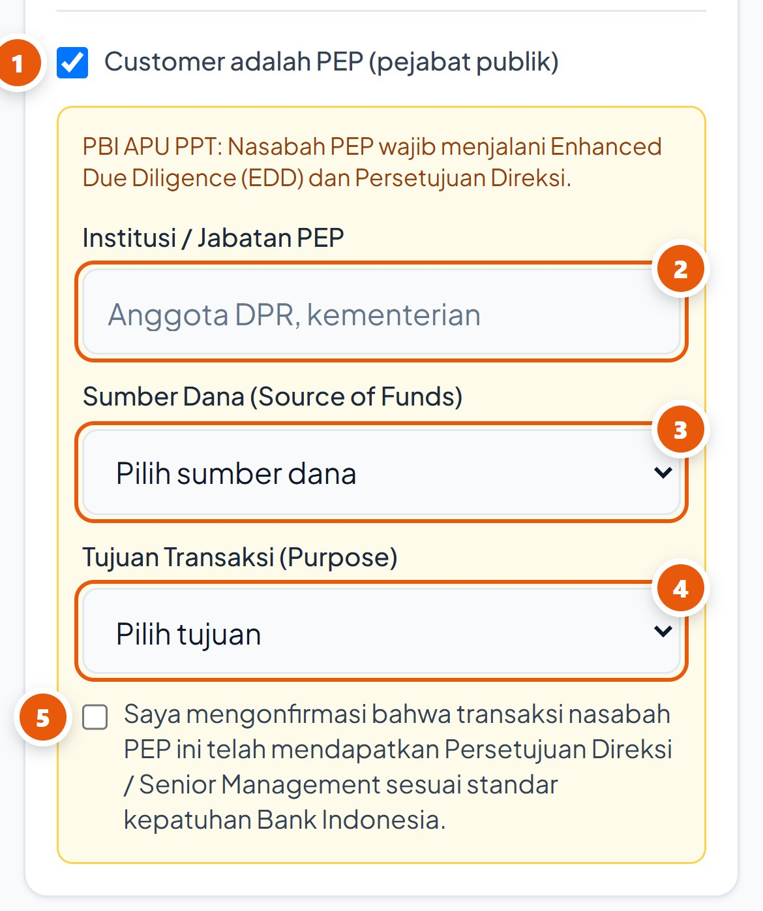
Gambar 6.1 Form EDD untuk customer PEP
Centang Customer adalah PEP (pejabat publik). Form EDD muncul.
Isi institusi / jabatan, misalnya Kepala Dinas atau anggota DPRD.
Pemilik menambah modal tunai atau mengambil uang kas.
Setor / tarik bank
Memindahkan uang antara kas toko dan rekening bank.
Bunga / adm. bank
Bunga jasa giro dan biaya administrasi bank.
Hutang
Menerima pinjaman atau membayar hutang.
Piutang, pajak di muka
Memberi piutang, membayar pajak di muka, atau menerima pelunasan.
Aktiva / inventaris
Membeli aset tetap, misalnya komputer atau brankas.
Pendapatan lain
Pemasukan di luar transaksi valas.
Mencetak laporan keuangan (format LKU BI)
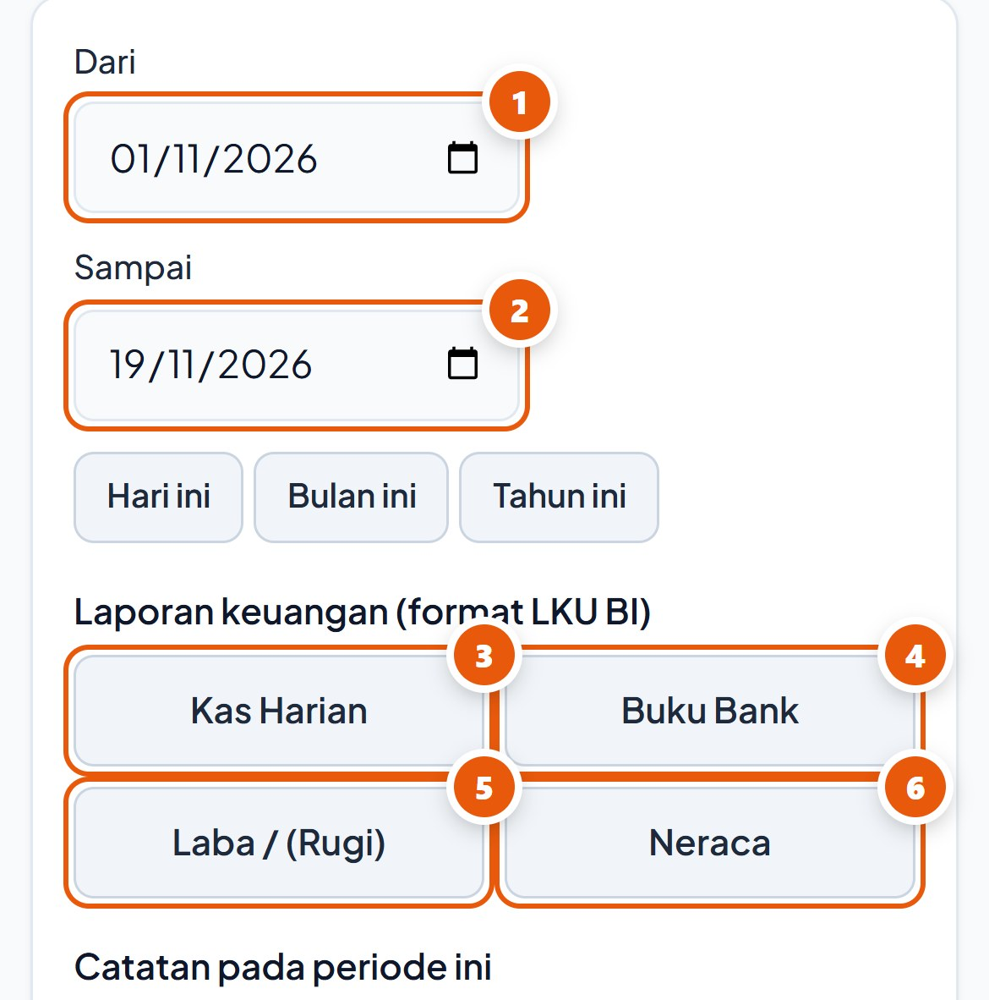
Gambar 12.2 Periode dan tombol laporan
Pilih tanggal dari.
Pilih tanggal sampai, atau tekan Bulan ini.
Kas Harian: mutasi dan saldo kas.
Buku Bank: mutasi rekening bank.
Laba / (Rugi): hasil usaha periode.
Neraca: posisi aset, kewajiban, ekuitas.
Kas Harian
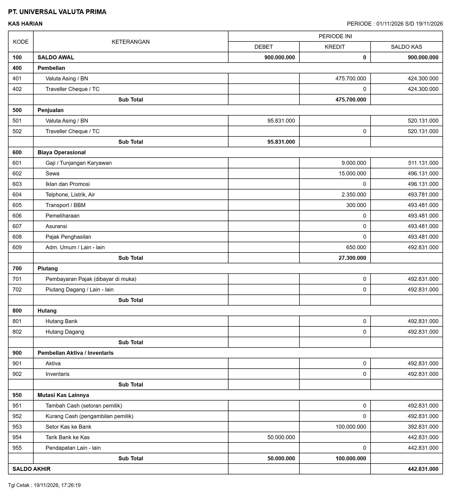
Gambar 12.3 Kas Harian dengan kode akun LKU dan saldo berjalan
Kode
Isi
100
Saldo awal kas periode.
401 / 501
Pembelian valas (kas keluar) dan penjualan valas (kas masuk).
601–609
Biaya operasional per kategori.
700–950
Piutang, hutang, aktiva, dan mutasi kas lainnya.
Buku Bank
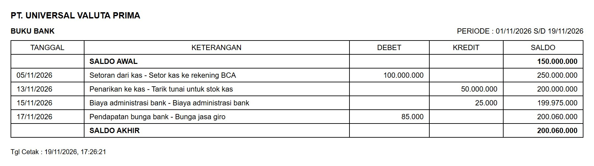
Gambar 12.4 Buku Bank
Setoran kas ke bank menambah saldo bank dan mengurangi kas. Penarikan kebalikannya. Bunga dan biaya administrasi bank ikut tercatat di Laba / (Rugi).
Laba / (Rugi)
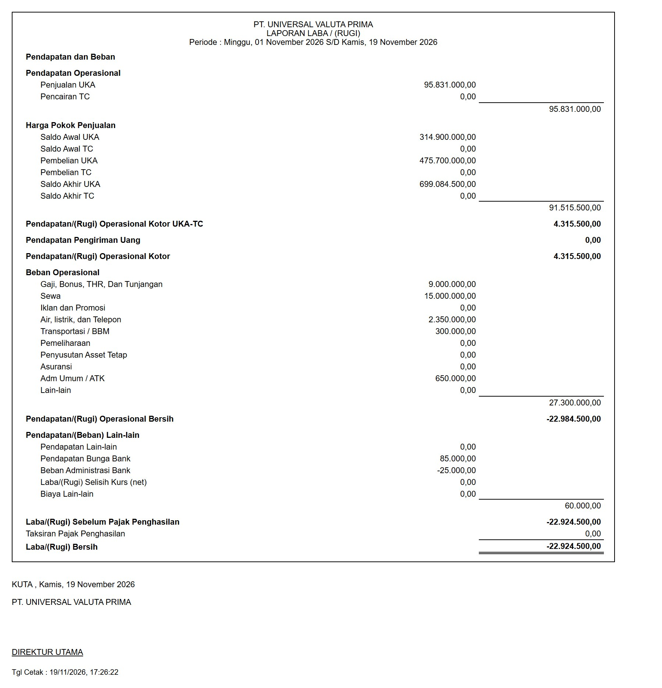
Gambar 12.5 Laba / (Rugi) dengan tanda tangan direktur
Harga pokok = saldo awal valas + pembelian − saldo akhir valas. Laba bersih = penjualan − harga pokok − beban operasional ± pendapatan/beban lain − pajak.
Neraca
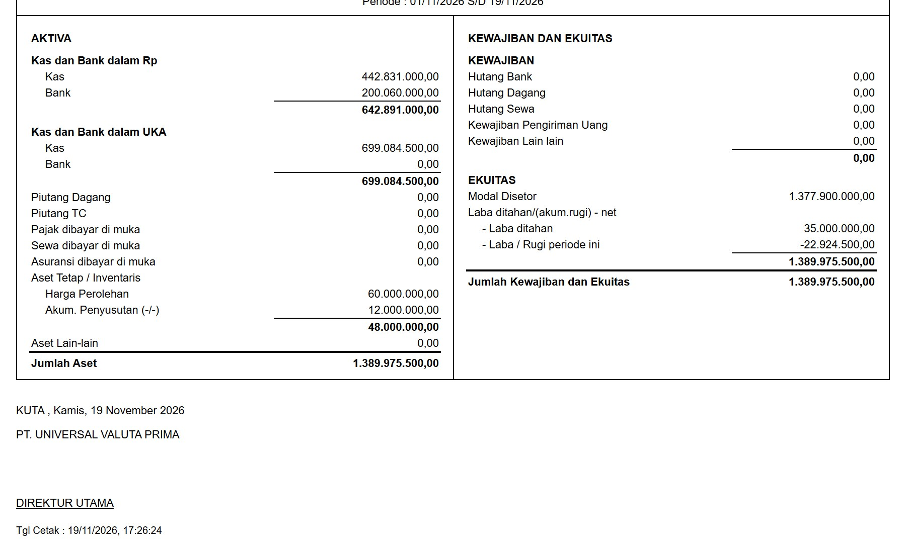
Gambar 12.6 Neraca: aset sama dengan kewajiban + ekuitas
Aktiva: kas dan bank, stok valas, piutang, pajak dibayar di muka, aset tetap bersih.
Kewajiban: hutang bank, hutang dagang, dan kewajiban lain.
Ekuitas: modal disetor, laba ditahan, dan laba / (rugi) periode berjalan.
Jika saldo awal tidak seimbang, Neraca menampilkan baris selisih berwarna merah. Periksa lagi saldo awal keuangan (Bab 2.7).
Penyusutan aset dicatat manual setiap bulan sebagai Biaya operasional → Penyusutan. Catatan ini tidak mengurangi kas.
Penutup
Rutinitas harian dan bulanan
Setiap hari
Masuk dengan akun kasir masing-masing.
Perbarui kurs di Papan Kurs sebelum toko buka.
Isi identitas customer lengkap di setiap transaksi.
Lengkapi dokumen underlying jika muncul notifikasi threshold.
Cek Stok Valas sebelum menjual dalam jumlah besar.
Catat biaya dan setoran bank hari itu di Keuangan.
Cek total harian di Riwayat & Laporan, lalu keluar dari akun.
Setiap akhir bulan
Isi kurs tengah BN untuk tanggal akhir bulan.
Catat penyusutan aset bulan itu.
Cetak Laporan Summary Valas untuk BI.
Cetak Kas Harian, Buku Bank, Laba/Rugi, dan Neraca.
Export PPATK bila diperlukan.
Unduh backup di Pengaturan → Database & Backup.
Pertanyaan atau kendala aplikasi: hubungi admin PT. UNIVERSAL VALUTA PRIMA di +6285-122-777-970.